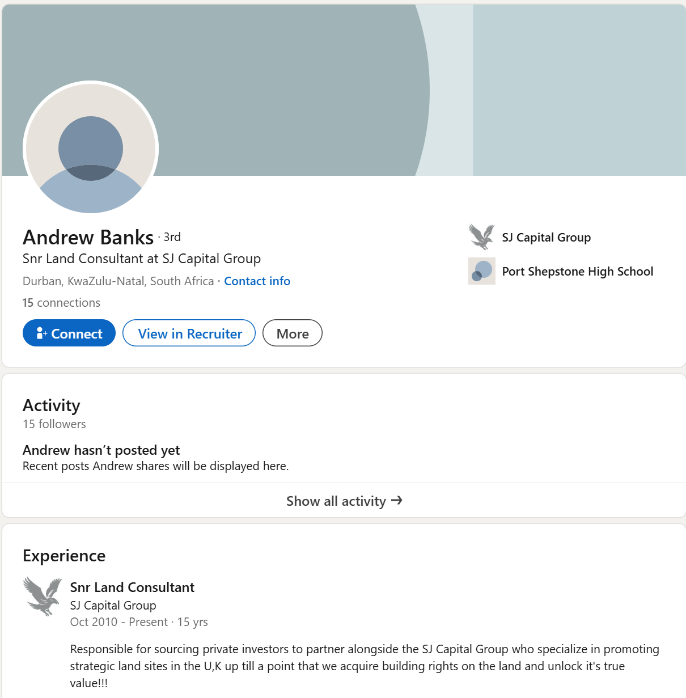

In 2006 Wayne Horwitz starts SJ Capital, likely with some help and ideas from others. The idea is to sell stakes in land that may, possibly, at a much later date be developed.
Wayne also owns or manages an IT company called WebEasy out of Benoni in Gauteng. This allows him to easily create the online image of a reputable property investment company.
SJ Capital is born, and Wayne begins to swindle unsuspecting people with the lure of investing in non-existant property in the UK.
We could not find anything on LinkedIn, but Wayne has profiles on Crunchbase and Rocketreach. Acreenshots, so we don't forget.
In 2009 the website "SJCapital.com" is registered, hosted by Wayne's WebEasy company.
To broaden the reach SJ Capital goes on a selling spree, setting up stands in bussiness districts and shopping malls in Sandton, Cape Town and likely Durban.
The strategy was simple: Politics were in shambles, loadshedding a reality, the Rand was falling and anxious people were looking for hope by trying to get international exposure.
Maybe UK Landscams were know in SA at the time, maybe not. But a team of salesmen and woman answered the call.
2006
Quinton Haddon - MD & Sales Director
According to his LInkedIn profile, Quinton has been with SJ Capital since 2007. As the "MD" we can presume he's a director of the company, and therfore not only a benefactor and chief strategist, but also someone with initmate knowlege of exact line where truth ended and swindeling started.
Quinton claim a Hons degree from the Universaty of Notthingham, and was likely instrumental in selecting the properties that were offered by SJ Capital.
It is also likely that he was a connecting point for the redtape that would later act as layers of barriers between South Africans and the UK authoreties.
Quinton Haddon currently lives in Durban, and is still actively marketing and selling non-existant properties from the SJ Capital Offices there.
Quinton surrounded himself with a salesteam of likeminded people. Individuals who knew they were taking people's savings with legal loopholes and big words.
2006
Craig Brits - Business Development Manager
Craig Brits is the BD manager for SJ Capital, his LinkedIn profile also provides a link to a simmilar property investment group called "Pentbridge Offshore", and UK consultancy firm "Landhold Capital".
Craig specifically names Pentbridge and Landhold Capital on his LinkedIn profile.
"We currently hold 9 prime strategic land sites in our portfolio to the value of > R600 Million Rands with a future value of > R2.2 Billion Rands. We have a proven track record of delivering 24% annualized returns to our investors. Annuity Income through Strategic Rental Property globally (Website www.pentbridge.co.za)."
"Our Land Planning team is based in London where national land searches are carried out, strategic strategies are prepared and negotiations undertaken. This provides a base in the capital where the work is undertaken and sites managed by industry recognised Chartered Town Planners. (Website: www.landholdcapital.com)".
2006
Pragasan Naidoo - Operations Director
Pragasan Naidoo is the current operations director at SJ Capital, has been at the operations helm for 7 odd years, and is actively still involved in the marketing and selling of the properties in the UK. He also appears to be the head of the Durban office, and is based out of Durban.
This is the only photo we could find of Pragasan, and if someone has a better picture, please email us.
Pragasan also appears to be the person managing the 'investor database' and would be responsible for the alledged double selling of properties.
2006
Rod Barker - Snr Land Consultant
According to his LinkedIn profile, Rod Barker has been with SJ capital from the beginning and has "20 years experience in financial services within the top banks in South Africa. Diamond trade worldwide and now land in the UK, holder of numerous records withing the group.".
Facebook confirmed this on both his profiles (some choice posts about woman there), and states that he is currently emplyed by "Hereford Financial Services" Not much comes up under this name, but "Hereford Financial Group" may or may not be linked to this man.
We can only speculate as to the exact place, but we hope they have strong ethics anf financial departments.
As a land consultant, it would stand to reason that Rod was instrumental in selecting or atleast vetting the properties that were put up for "sale" by SJ Capital, and therefore by implication had knowlege that they were in flood zones, under water, or unsuitable for development.
As a perveyor of fugazi, it would be interesting to track down "Hereford Financial Services" and test their track record.
2006
Andrew Banks - Snr Land Consultant

According to his LinkedIn profile, Andrew Banks is "Responsible for sourcing private investors to partner alongside the SJ Capital Group who specialize in promoting strategic land sites in the U,K up till a point that we acquire building rights on the land and unlock it's true value!!!"
As a Snr Land Consultant with this job description, it is a safe assumption that Andrew is on the inside, and with a decade at SJ Capital, he is still actively finding people to con.
If you are one of the "Prive Investors" and had dealings with Andrew, we would love to hear your story.
Andrew does not have a picture on LinkedIn, and does not appear on any of SJ Capital's social media that we could find. We know Andrew is in his early 50s in 2025, and attended Port Shepstone High where he matriculated in 1990.
If anyone has any knowlege of his whereabout or a decent picture, please send us a message.


Comments (152)
Thank you so much for putting this together Jeremy. Most of these seem like common sense but it is amazing how many times I see new employees having the worst days of their life because managers/leaders don’t want to be “bothered” with the new guy.
I would add under “keep the busy” to make sure that every team member is aware of the new team member starting, and even thought the first 1-2 days may be meet and greats, to have them up with access to everything they need to preform their tasks.